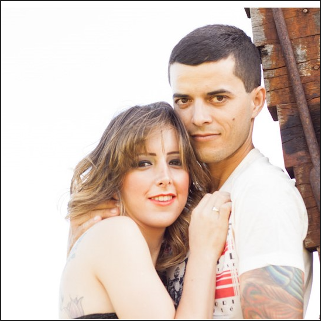
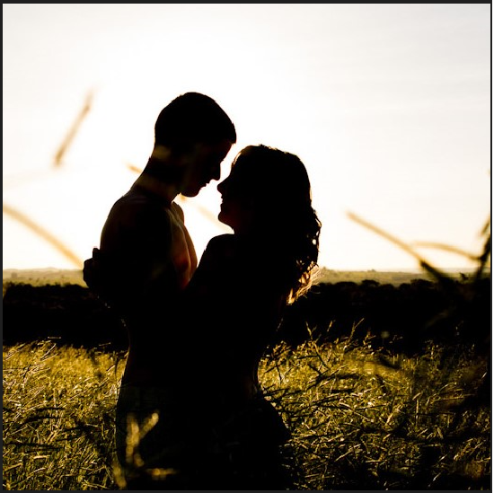
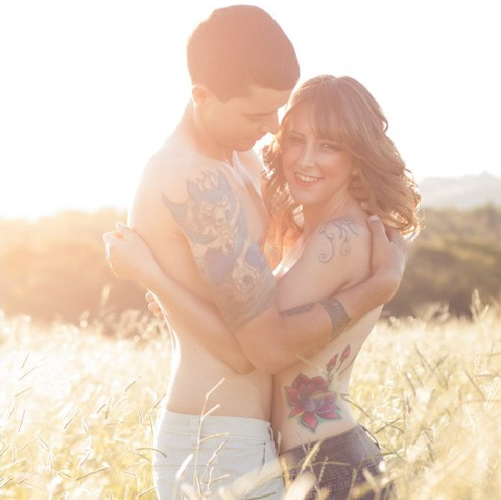
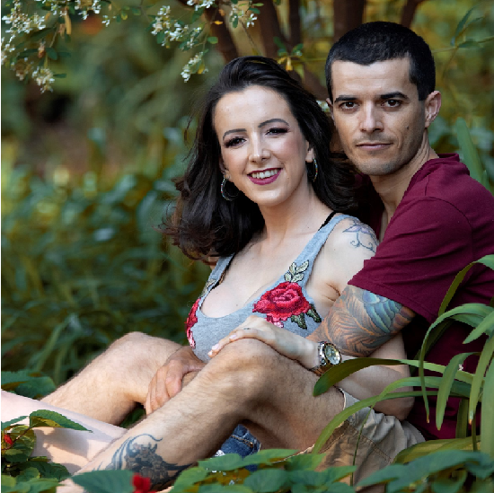
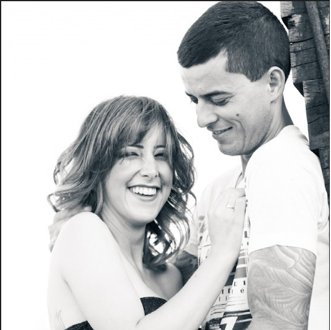
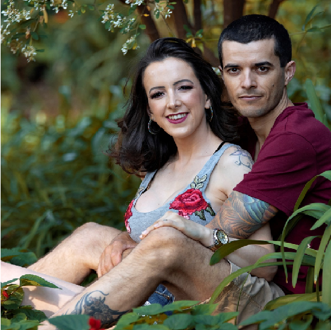
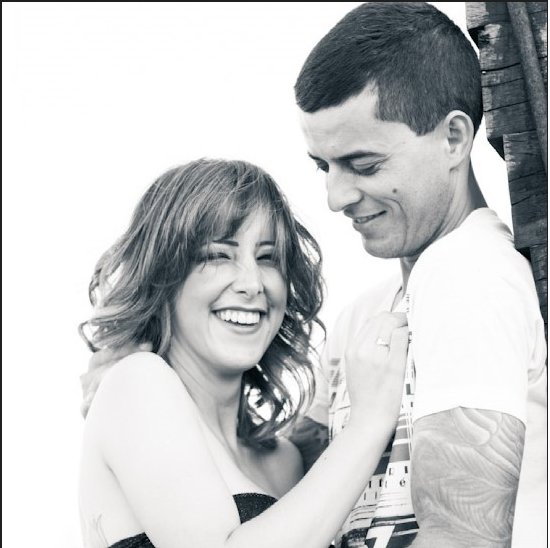

Hoje, neste dia dos namorados, quero expressar o quanto sou feliz por estarmos juntos há quase 18 anos. Cada dia ao seu lado é um presente valioso que a vida me deu.
Você é uma pessoa incrível, um homem maravilhoso que sempre me tratou como uma princesa. Sua gentileza, carinho e amor incondicional enchem meu coração de gratidão. És uma pessoa linda, tanto por fora como por dentro, cheia de qualidades que admiro profundamente.
Ao longo de nossa jornada, compartilhamos risos, lágrimas, conquistas e desafios. E em cada momento, você esteve ao meu lado, apoiando-me e sendo meu porto seguro. Sua presença me traz conforto e paz, e eu me sinto completa com você ao meu lado.
Desejo, do fundo do meu coração, que você alcance tudo o que deseja e que todos os seus sonhos se realizem. Você merece toda a felicidade do mundo, pois é uma pessoa de luz e inspiração para mim e para todos que têm a sorte de conhecê-lo.
Minha vida é infinitamente feliz com você, quero que continuemos juntos construindo um futuro repleto de amor e alegria. Que possamos comemorar muitos e muitos dias dos namorados juntos, renovando nosso amor e celebrando a nossa cumplicidade.
Saiba que a cada batida do meu coração, é o seu nome que ecoa dentro de mim. Eu te amo mais do que as palavras podem expressar, e sou grata todos os dias por ter você como meu marido, meu companheiro e minha fonte constante de felicidade.
Com todo o meu amor,
Jozi Oliveira.
   


